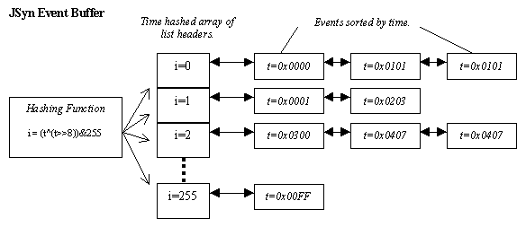

JSyn - Java Audio Synthesis
Event Buffer Implementation
Lists must be kept short to limit time spent on insertion sort.
Time is hashed to spread events evenly across list headers.
i = (t^(t>>8)) & 255;

[
TOP
] [
PREVIOUS
] [
NEXT
]
[
EXAMPLE
]